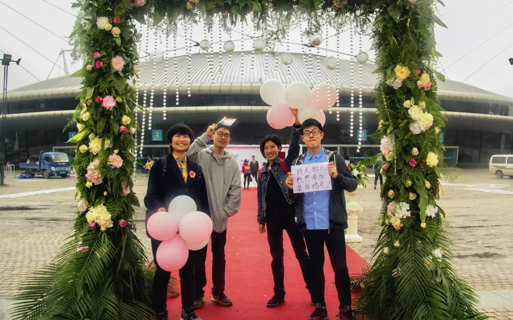
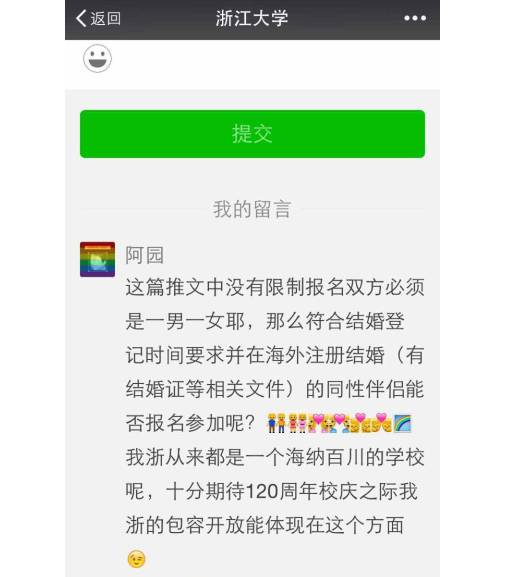
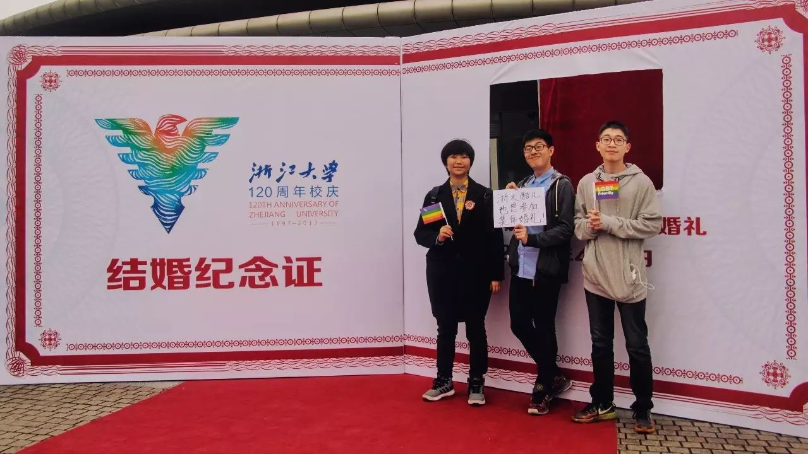
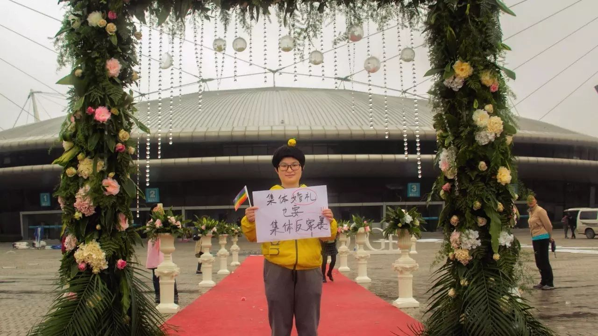
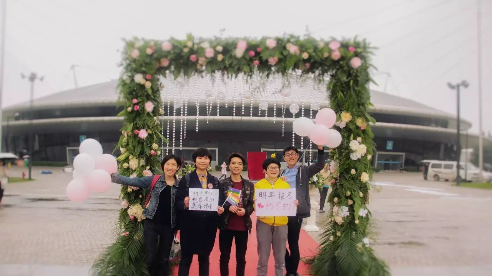

酷儿们的呼声 | 我们也想参加集体婚礼！

4月9日下午，紫金港飘着小雨，正值浙大120周年校庆之际，在紫金港体育馆举办的集体婚礼迎来了120对回归母校的新人（异性伴侣），他们在这个充满回忆的地方见证了自己的幸福。

· 这些新人指的并不是图中这些人
在祝福这些新人们的同时，我们也在展望，什么时候浙大的集体婚礼也能有我们的一席之地，什么时候浙大的集体婚礼也能接受同性伴侣，甚至是多元成家伴侣的报名申请呢？

数月前，在本年度集体婚礼还处于前期宣传招募阶段时，我就在相关推文里留言，询问海外注册结婚的同性伴侣是否能够报名。但很遗憾，这条留言没有被小编选中，也就没能得到回复。

于是，我就萌生了叫上小伙伴们在集体婚礼举办之时去到现场合照的想法。我想要借此机会，表达我们的诉求：我们，来自浙大的，或伴侣来自浙大的，或未来伴侣可能来自浙大的男女同性恋、lgbt+、多元成家意向者，也想要有参加浙大集体婚礼的机会。我们知道集体婚礼的名额十分火爆，但我们想要的，是能够报名，并与其他报名者一起参与随机筛选的机会。
许多小伙伴响应了我的号召，有浙大的，也有不是浙大的，有同性恋，也有直人。然后，4月9日下午四点，我们来到了紫金港体育馆外，在为集体婚礼布置的花门与纪念墙旁合影拍照。

在拍照的过程中，有一对新人看见我们手中的标语，问我们“酷儿”是什么意思。当我们说“酷儿”指包括同性恋在内的性少数群体，我们也想像他们一样参加集体婚礼时，他们表示很支持。我们邀请他们一起合照，并祝他们新婚快乐。

· 与新人的合照
稻子认为，同婚合法是性少数群体取得平等权利的重要前提之一，他喜欢自由自在的生活，却也希望能有和一位男性携手步入婚姻殿堂的那一天。

· 稻子与阳阳的合照
大力认为，婚烟是对双方感情的保障。对他而言，谈恋爱就是奔着结婚去的。即使国内目前不能结婚，但还是有着积极乐观的心态能等到那一天。所以他单身了21年还没遇到三观相同理想相同还能跟他一起生孩子的那个他。
对我来说，婚姻或亲密关系都不是我的人生所必需的。“谈恋爱多么影响学习啊！”现阶段的我这么认为。我从没有主动追求过喜爱的小姐姐，但是如果有小姐姐喜爱我，我当然不会拒绝，也希望能有机会和小姐姐一起参加浙大的集体婚礼。

· 阿园与小丽的合照
小丽、猪西西和李葡萄是多元成家的坚定拥护者。

· 在集体婚礼现场宣传反家暴的李葡萄
猪西西认为，婚姻不应该只属于异性恋，也不应该只属于一对一组合的排他性浪漫爱，朋友或者其它相互信任的人都应该可以采取婚姻或其它方式，合法地结合成为家庭，相互扶持，共同生活。所以婚姻不应该用来把个人限制隔离在专偶制中，让世界变小，而应该给不同关系不同组合的人互相之间的信任与支持更多合法性的法律保障，让世界变得更大更美好。
小丽认为，组建多元家庭才是终极目标，人与人之间的信任和感情本身就闪耀着光芒！
我觉得她们这些“多元成家霸权主义”说得有点道理，那么，就让我们一起来组建多元家庭吧！

·活动现场志愿者合照
我们期待，在浙大130周年校庆之时（当然越早越好，最好明年）的集体婚礼上，能够看见更多元的伴侣组合形式，而不仅是一男一女。
文字 | 阿园
摄像 | 张大力
编辑 | 文文